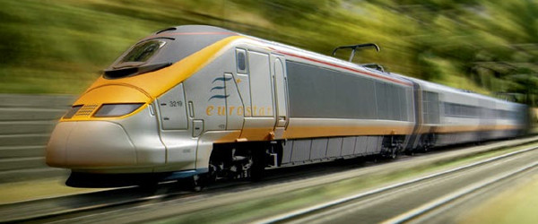

Clearly Olly knows a thing or two about avoiding a flight! Therefore if you want to discuss alternative ways of travelling down Olly would be more than happy to discuss the best ways of getting there without setting foot on a plane!
Driving takes approximately 13 hours from London (although significantly more with children and can be significantly less if one takes a loose attitude to the speed limit!). We would recommend taking the Eurotunnel from Folkstone to Calais which has a crossing time of 35 minutes rather than 1hr15 on the ferry. Sat Nav can guide you pretty well however be sure not to take the route via Paris, we follow the route of Arras, Saint Quentin, Reims, Dijon, Lyon, Avignon, Ste Maxime (Look this up on a map for road numbers).
You can now also take a Eurostar all the way from London to Avignon in Provence. It takes about 6 hours. From there you can either hire a car and drive the rest of the way (+/- 2 hours), or get a connecting train to Frejus which is about a 30 minute drive from Ste Maxime.
We would recommend renting a car, which will be less expensive than a taxi. Car rentals are available from Nice Côte d'Azur Airport.
Taxis: A pre booked taxi will cost between €160-200 one way.
It is possible to hail taxis from outside the airport but they will be very expensive.
Take the A8 (towards Aix-en-Provence/Toulon/Marseille) for around 68 kms, getting off at exit 36 and follow directions to Sainte Maxime and Saint Tropez. Follow the D25 for roughly 25 kms and you will come into the centre of Sainte Maxime.